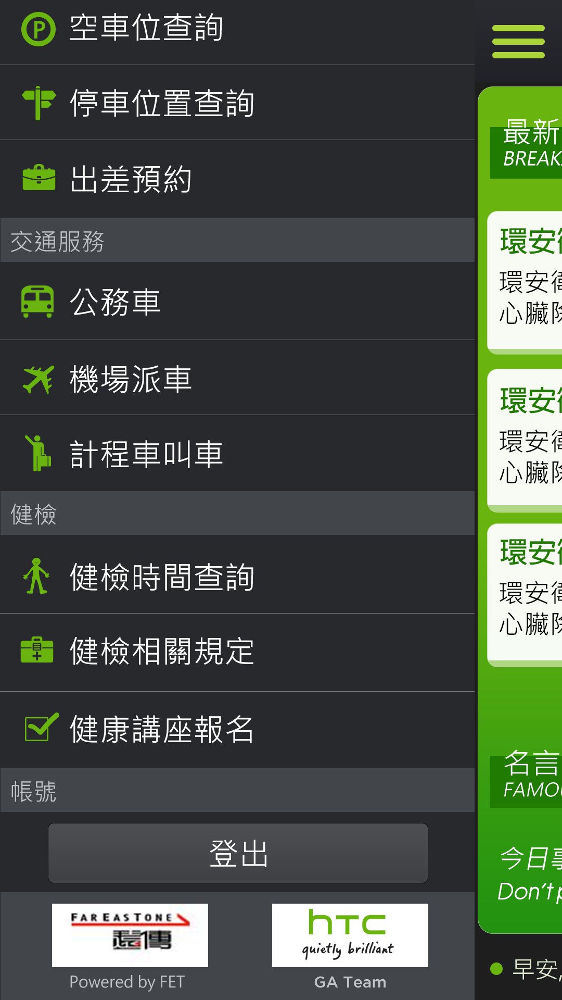

Something about me.
Taiwan University of Science and Technology [Sep 2003 - Jun 2008]
Trend Micro Inc. — Sr. Software Engineer [2016 - Present]
JamZoo Inc. — Sr. Software Engineer / .Net Team Lead [2011 - 2016]
Tornado Tech. — .Net Software Engineer [2011 - 2011]
Medialand Digital Marketing. — ASP.NET Developer [2009 - 2011]
[Intern] Doggy Digital Creative. — ASP.NET Developer [2006 - 2007]
FunPush Push Notification Service Portal — @ JamZoo Inc.
This project integrates gcm / apns / mpns push notification services, providing message storage and statistics reports. The largest consumer, CityDriver App, has more than 1.5 million downloads. I was responsible for system design, development and maintenance.
HTC Employee Service — @ JamZoo Inc.
HTC mobile service system for internal staff, providing taxi ordering, meal ordering, meeting room booking, and more than 10 other various staff services. Users can utilize company resources more easily, and the company can immediately receive feedback from employees to help developing new policy and reviewing existing ones. In this project, I was responsible for backend development.
TAIWAN GOLD WELL CRM Mobility System — @ JamZoo Inc.
Taiwan Goldwell's internal business processes used to be done on paper only. This project helped Taiwan Goldwell to switch to mobile devices for their daily paperwork. I was responsible for planning, system design, and development.
TAIWAN MITSUBISHI ELEVATOR Maintenance System — @ JamZoo Inc.
Taiwan Mitsubishi Elevator has more than 400 elevator technicians, servicing more than 40,000 clients including various types of business, factory office, and home elevators. The technicians provide professional regular testing and maintenance services throughout the year. In this project, I was responsible for requirement meetings with the client as well as planning, designing, integrating and developing the system.
HAPPY GO Windows Phone App — @ JamZoo Inc.
This app contains HAPPY GO promotions and specials offers, allowing searching and viewing promotional info anywhere.
OpView — @ Tornado Tech.
Natural language from social media of Taiwan automated processing website. Related technologies and tools :
- ASP.NET MVC 2.0 - 3.0
- Linq To SQL
- C# .Net
- SQL Server 2008
- Mongo DB
- Tornado Search SDK
2012 Taiwan's Presidential Election Campaign With Plurk — @ Tornado Tech.
My company launched a new web site to analyze 2012 Taiwan's presidential election situation with Plurk Inc., I was responsible for the project's implementation. Related technologies and tools :
- C# .Net
- Plurk API
- Java Script
- Jsonp
- Hicloud
- rSync
Gooka Market App @ 2016 [WebSite] [Youtube]
Gooka is a social platform aiming to connect people of similar interest to exchange items. It takes only 30 seconds to list an item for sale, and users can communicate with one another in real time without switching to another messenging app. I was responsible for the backend system design, development and maintenance. Gooka is available now on both iOS and Android but its promotion has not yet begun.
NTUST Continuing Education Center @ 2007 [Web Site]
National Taiwan University of Science and Technology continuing education center web site.
MidiBigWind @ 2005 [GitHub]
This is a academic projects about midi music file, inclouds three major features
- Used to analyze the style of a midi file
- Song style transformation
- Compose a new song automatically